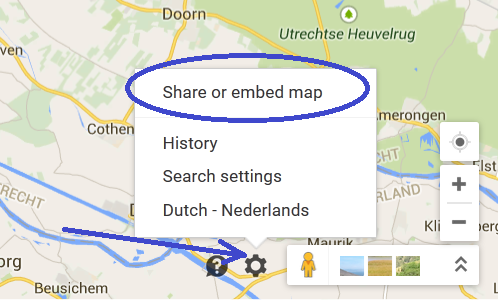
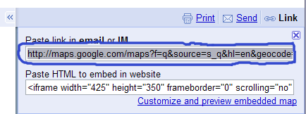

This tutorial explains how to generate route movies, using Route Generator.


It's now possible to select a different generator than bmp2avi on Windows, namely ffmpeg (on Linux this is the default). This encoder is quicker than bmp2avi and it's possible to use more different codec types (MPEG-4 is the default) and also select a different bitrate of the generated output video. If you want to do this, you will first have to download the Zeranoe FFmpeg Windows builds. To extract any of the builds you will need to download and install 7-Zip.
After that you have extracted the downloaded 7-Zip file can select ffmpeg in the Advanced tab of the Route Generator Preferences window.
The program will then ask you for the location of the FFmpeg encoder. You will have to browse for the FFmpeg executable (ffmpeg.exe),
which is usually located in the bin sub-directory of the extracted FFmpeg 7zip file:
Now browse to Google Maps in your browser and locate a map that you want to use. Then copy the link to the URL field in Route Generator by:
Selecting the properties menu and select Share or embed map:

Copy the link by selecting it and press Ctrl+c

Right click the URL field in Route Generator and select Paste:

 ).
Now start drawing a route, by clicking and dragging your mouse over the map.
You can reset the route by deactivating draw mode and activating it again.
If you're satisfied with the route you can do some adjustments to the way the route is displayed (next section).
).
Now start drawing a route, by clicking and dragging your mouse over the map.
You can reset the route by deactivating draw mode and activating it again.
If you're satisfied with the route you can do some adjustments to the way the route is displayed (next section).
You can add custom icons for vehicles by adding your own icon files. The following icon formats should be accepted: *.gif, *.png, *.jpg
It's recommended to add icons with a transparent background (i.e. *.gif or *.png with an alpha layer). Also choose a reasonable size for the vehicle icons, e.g. 50x50 pixels.
Animated vehicle iconsWhen the vehicle is an animated image (e.g. animated gif), Route Generator will playback the animation in the generated movie!
 (or from menu: Tools->Playback).
(or from menu: Tools->Playback). (or from menu: Tools->Stop)
(or from menu: Tools->Stop)
 (or from menu: Tools->Generate route).
For each frame of the movie, Route Generator will generate a *.bmp file in the selected directory.
Next, these frames (*.bmp files) will be converted to an AVI movie, using bmp2avi, which is
by default included with Route Generator.
(or from menu: Tools->Generate route).
For each frame of the movie, Route Generator will generate a *.bmp file in the selected directory.
Next, these frames (*.bmp files) will be converted to an AVI movie, using bmp2avi, which is
by default included with Route Generator.
NOTE: Each BMP-file will be written in uncompressed format! E.g. one BMP-file of 768x576 uses about 1.2 MB of diskspace. Route Generator assumes 25fps, so for each second 25 x 1.2MB = 30MB of disk space is required for the BMP-files only and another 30MB for the generated AVI movie! (Route Generator will also give a rough estimation of the required diskspace, before you start generating the route)
If somehow bmp2avi is not available, you can download it from:
http://www.divx-digest.com/software/bmp2avi.html
Make sure to download the commandline version (bmp2avi.exe)!
You can extract bmp2avi.exe into any directory.
When Route Generator starts up, it will automatically ask you to locate the file bmp2avi.exe.
After the movie is generated, you can import it in you video editing software. You can optionally
finetune the movie by adding extra begin/end frames that you pick from the directory containing
the generated *.BMP files.
It's possible to modify the settings that Bmp2Avi or FFmpeg uses to convert BMP's to an AVI file. To change these settings open the preferences through Edit->Preferences. Here you can change 6 Bmp2Avi settings:
Here you can change the location of bmp2avi.exe, in case you have it in a different location or for some reason Route Generator is unable to find it anymore.
When you check this, the BMP's will automatically be deleted after the bmp2avi conversion. The first and last frame will not be deleted, so you can still use them in your video editing software.
Here you can change the frame rate of the generated AVI (the default is 25).
Here you can change the bitrate (in kb/s) of the generated movie.
This value indicates after how many frames a key frame is created (the default is 25).
Here you can change the codec that Bmp2Avi uses to generate the movie. This can result in smaller movies, but it's possible that not all codecs are accepted by your video editing software. (the default is "Uncompressed")